Последнее время часто шли
споры по поводу пригодности GIMP для полиграфических
работ. И очень часто мне на глаза попадалась фраза типа
"...для полиграфии он не годится, зато для
web-дизайна...". И действительно, очень многие
соглашаются с тем, что GIMP весьма хорош для
web-дизайна. Поэтому вместо того, чтобы спорить о
пригодности GIMP для полиграфии, давайте разберемся,
какие возможности GIMP можно использовать для web.
GIMP в действительности обладает
многими весьма удобными инструментами для создания
веб-изображений, начиная с создания простых логотипов,
заканчивая созданием анимации.
Начнем с самого простого, но в тоже
время интересного. Откройте пункт меню
Расш. -
Скрипт-Фу:
Нас будут интересовать
пункты
Кнопки,
Темы Web-страниц и
Эмблема. Если Вам нужно побыстрее сделать
красивую надпись или нарисовать кнопку, вам сюда. Начнем
с кнопок.
Пункт меню
Кнопки
содержит два скрипта. Один из них
Простая выпуклая
кнопка создает квадратную выпуклую кнопку на основе
выбранных Вами настроек. Настройки позволяют задать
практически любой из параметров кнопки: шрифт, цвет,
ширину скоса, а так же создать выпуклую или нажатую
кнопку:
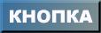
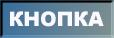
Второй пункт этого меню
Круглая
кнопка создает сразу три типа кнопок на основе
выбранных настроек: обычная, приподнятая и нажатая, что
позволяет использовать их при создании "живых" кнопок с
помощью javascript. Этот скрипт имеет такой же набор
настроек как и предыдущий, плюс позволяет сразу же
задать цвета активной кнопки:
Таким
образом, можно быстро создать нужное количество кнопок
для своей страницы особо не вдаваясь в подробности их
изготовления.
Меню
Темы
web-страниц позволяет быстро создать все нужные
элементы страницы, используя одну из трех предложенных
тем: gimp.org, Выпуклый шаблон и Чужое свечение. От себя
скажу, что достойным внимания можно назвать только
Выпуклый градиент (ну если только у Вас нет
навязчивого желания сделать свою страничку похожей на
www.gimp.org). Итак с помощью темы
Выпуклый
градиент можно создать кнопки, заголовок, стрелки,
маркеры и линейки в едином стиле, используя один из
шаблонов GIMP или какой-либо свой:
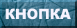
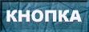
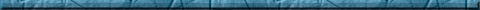
Попробуйте, это действительно
быстро и просто.
Меню
Эмблемы, наверное, самое интересное и
разнообразное. Оно содержит около 30 скриптов,
позволяющий за считанные секунды создать весьма сложные
и красивые логотипы. Имеет смысл поиграть с каждым из
них, наверняка найдете что-нибудь по душе. Вот только
два примера на которые я затратил не более 20 секунд:
Таким образом, используя все
вышеперечисленные скрипты, можно весьма быстро создать
оформление Вашей web-страницы и удивить всех своей
скоростью работы.
Естественно,
оформление страниц далеко не всегда можно делать
стандартными скриптами. Часто возникает надобность
использовать уже готовое изображение для создания кнопок
и т.п. Представим, что у Вас есть одно изображение, на
котором Вы хотите разместить кнопки. Например, делаем
сайт гитариста Joe Satriani:
Существует два пути: разрезать
изображение на чати или задать в html области кнопок с
помощью тега <map>. GIMP позволяет легко сделать и
то и другое. Начнем с разрезания на куски. Для этого
используются направляющие. Направляющие - это
вспомогательные линии, используемые в GIMP для привязки
к координатам или для выравнивания. Вызвать направляющую
крайне просто. Зацепите мышой линейку у изображения и
потяните вниз (или в сторону), увидите пунктирную линию.
Установите направляющую в предполагаемом месте разреза и
примените
Изображение - Преобразования -
Гильотина. Вы получите разрезанное на части
изображение. Таким образом разделим исходную картинку на
две части: одну с кнопками и вторую без. Теперь разрежем
кнопки. Покажу на примере:
| Исходное |
Направляющие |
Разрезанное |
| |
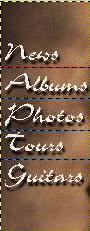 |
| |
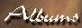 |
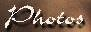 |
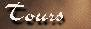 |
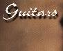
|
Если
после этого грамотно составить кнопки одна к другой, то
получится изображение без видимых границ. Такой способ
может быть полезен для создания "активных" кнопок.
Другой способ подразумевает задание областей кнопок с
помощью тега <map>. Возьмите нужное изображение и
примените к нему
Фильтры - Веб - Карта
изображения.
Этот фильтр позволяет
выделить области изображения и сгенерировать html код,
описывающий их. Можно выделять:
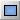
- прямоугольники
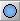
-
окружности
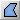
-
многоугольники.
При задании любой
области появляется большое диалоговое окно, в котором
можно задать URL ресурса на который будет ссылаться
кнопка, тип ресурса, координаты, а так же команды
javascript. Все задаваемые области помещаются в список
справа. С любой из заданных областей можно впоследствии
совершать следующие действия:
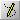
-
редактировать все настройки
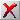
-
удалить
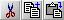
- вырезать,
скопировать, вставить
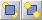
-
Поставить на передний или задний
план.
Кроме того, существует богатая
по возможностям система привязок к сетке и направляющим,
которая вызывается через меню со странным названием
"конфеты".
Таким образом, можно
задать огромное количество простых и сложных областей
изображения, которые будут являться гиперссылками. Для
примера я задал области для кнопок, а изображение
гитариста сделал ссылкой на его сайт.
Сохранив результат
действия этого фильтра можно получить подобный html-код:
<IMG
SRC="/home/httpd/html/gimp/doc6/j1.jpg" WIDTH=473
HEIGHT=231 BORDER=0 USEMAP="#map"> <MAP
NAME="map">
<!-- #$-:Image Map file created by
GIMP Imagemap Plugin -->
<!-- #$-:GIMP Imagemap
Plugin by Maurits Rijk -->
<!-- #$-:Please do
not edit lines starting with "#$" -->
<!--
#$VERSION:1.3 -->
<!-- #$AUTHOR:Alexey
Seleznyov -->
<AREA SHAPE="RECT"
COORDS="2,38,74,65" HREF="news.html">
<AREA
SHAPE="RECT" COORDS="2,68,90,96"
HREF="albums.html">
<AREA SHAPE="RECT"
COORDS="3,98,90,129" HREF="photos.html">
<AREA
SHAPE="RECT" COORDS="3,129,69,156"
HREF="tours.html">
<AREA SHAPE="RECT"
COORDS="3,157,86,190"
HREF="guitars.html">
<AREA SHAPE="POLY"
COORDS="124,29,148,38,157,59,152,70,150,84,169,109,
178,139,188,156,238,127,244,136,193,166,195,182,183,196,169,201,157,217,160,
226,152,230,86,230,93,219,88,192,91,177,90,164,102,151,90,130,92,63,101,35"
HREF="http://www.satriani.com">
</MAP>
Следующее,
что может интересовать в возможностях GIMP для создания
изображений для web - это изображения с прозрачным
фоном. С этим GIMP справляется без проблем. Вы можете
изначально создать изображение с прозрачным фоном, а
можете задать прозрачность для определенного цвета. Для
этого откройте
Фильтры - Цвета
Цвет->Альфа-канал и выберите нужный цвет, котрый
хотите сделать прозрачным. Либо перетащите цвет из
диалога цветов главного окна GIMP:
После этого изображение
можно сохранить как gif. Однако перед этим можно выбрать
соответствующую палитру для этого изображения. Примените
Изображение - Режим - Индексированное. При
конвертировании изображения в индексированное можно
выбрать нужную палитру. GIMP содержит большой набор
палитр, в том числе и палитру web. Правильно выбранная
палитра позволит уменьшить размер gif файла, что тоже
немаловажно. Причем всегда имеет смысл включать удаление
неиспользуемых цветов из палитры.
Кроме всего прочего, GIMP позволяет очень легко
создавать анимационные gif изображения. Этому я уже
посвятил отдельную статью, которую можно прочитать
здесь.
Вот, наверное, и все основные особенности GIMP,
применимо к веб-дизайну, однако я не исключаю, что их
еще больше и о некоторых я просто не в курсе. Если у Вас
есть какие-либо замечания или дополнения по поводу этой
статьи, присылайте мне их на e-mail:
mailto:[email protected].
Удачи!